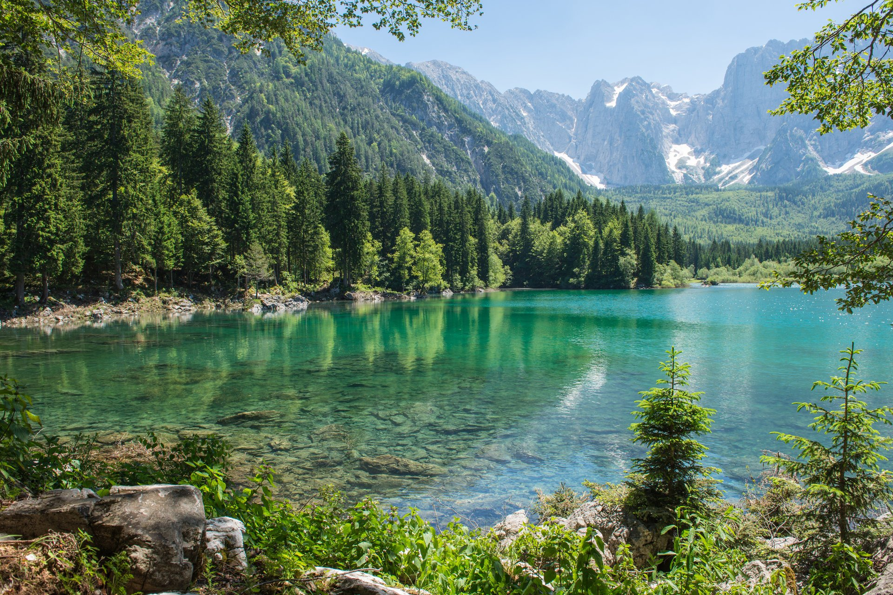
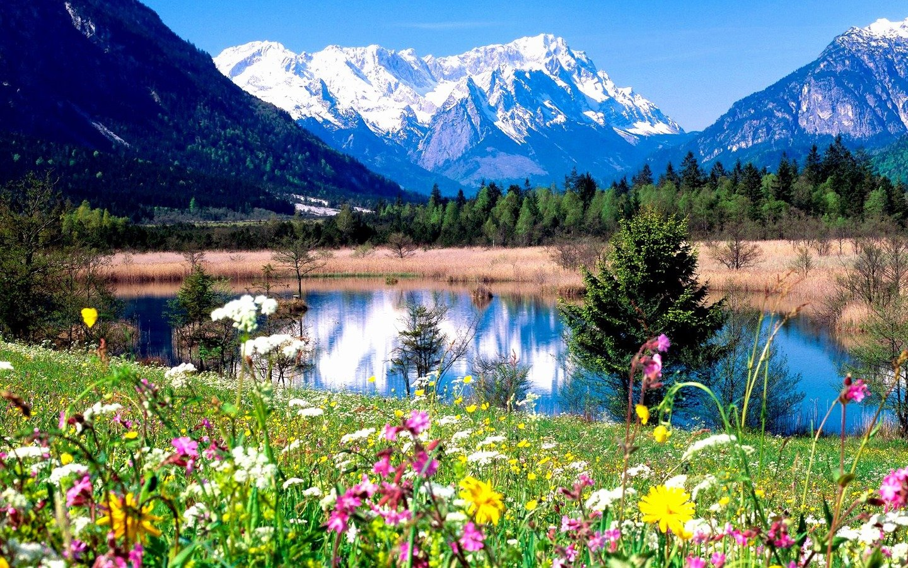
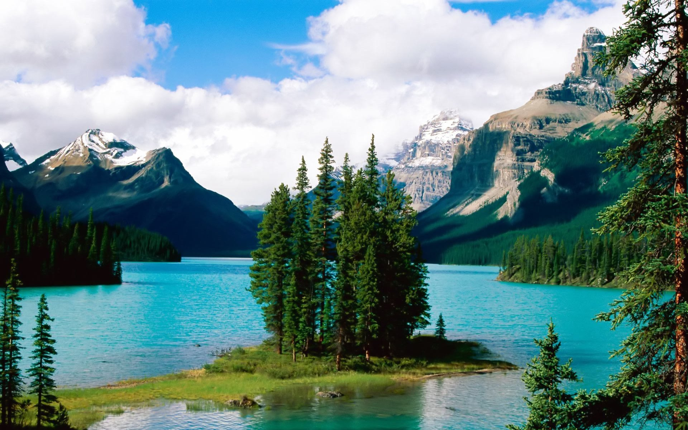

<!DOCTYPE html>
<html xmlns="http://www.w3.org/1999/xhtml">
<head>
    <title>Быстрый старт. Размещение интерактивной карты на странице</title>
    <meta name="viewport" content="width=device-width, initial-scale=1">
    <meta http-equiv="Content-Type" content="text/html; charset=utf-8" />
    <script src="https://api-maps.yandex.ru/2.1/?apikey=556a806a-b239-476a-9342-caefdcba1c9d&lang=ru_RU" type="text/javascript"></script>
    
    <style>
        body {

            display: flex;
            justify-content: center;
             margin: 0 auto;
        }

        #map {
            width: 100%; height: 600px; margin: 20px; padding: 0 auto;
        }

    </style>
<script>
    ymaps.ready(init);
    function init(){
        var myMap = new ymaps.Map("map", {
            center: [55.76, 37.64],
            zoom: 7
        });
    
        // Здесь добавляем метки
        var points = [
            {
                coords: [55.76, 37.64],
                hint: 'Москва',
                balloon: 'Столица России<br>',
                iconImageHref: '7.jpg', // URL иконки для Москвы
                iconImageSize: [20, 20] // Размеры иконки
            },
            {
                coords: [56.185119, 36.977568],
                hint: 'Солнечногорск',
                balloon: 'Солнечногорск<br>',
                iconImageHref: '3.jpeg', // URL иконки для Санкт-Петербурга
                iconImageSize: [20, 20] // Размеры иконк
            },
            {
                coords: [56.560891, 37.433493],
                hint: 'рабочий посёлок Запрудня',
                balloon: 'рабочий посёлок Запрудня<br>',
                iconImageHref: '4.jpg', // URL иконки для Санкт-Петербурга
                iconImageSize: [20, 20] // Размеры иконки
            },
            {
                coords: [56.315346, 38.135953],
                hint: 'Сергиев Посад',
                balloon: 'Сергиев Посад<br>',
                iconImageHref: '5.jpg', // URL иконки для Санкт-Петербурга
                iconImageSize: [20, 20] // Размеры иконки

            },
            {
                coords: [55.121117, 37.958793],
                hint: 'рабочий посёлок Михнево',
                balloon: 'рабочий посёлок Михнево<br>',
                iconImageHref: '6.jpg', // URL иконки для Санкт-Петербурга
                iconImageSize: [20, 20] // Размеры иконки
            }
            // Добавьте здесь другие точки
        ];
    
        points.forEach(function(point) {
            var placemark = new ymaps.Placemark(point.coords, {
                hintContent: point.hint,
                balloonContent: point.balloon
            }, {
                iconLayout: 'default#image',
                iconImageHref: point.iconImageHref, // Используем URL иконки из данных точки
                iconImageSize: point.iconImageSize, // Используем размеры иконки из данных точки
                iconImageOffset: [-5, -5] // Смещение иконки
            });
            myMap.geoObjects.add(placemark);
        });
    }
    </script>
    
</head>

<body>
    <div id="map"></div>
</body>

</html>
